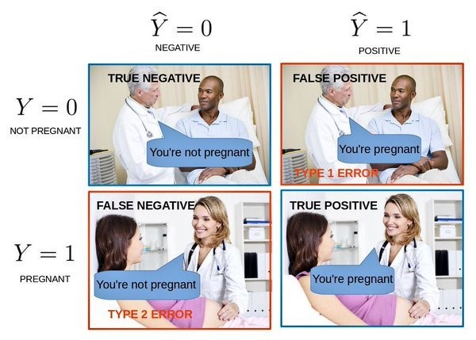

“Machine learning uses data, and this data is going to be used to train the model, and the model is then used for predictions.”
What?
One of the most frequently used buzzword in the world of data is Machine
Learning.
First of
all it's importent to understand that machine learning (ML) is a subset of AI. Machine Learning
uses data to generate statistical code that
will output the right result, based on the pattern recognized from previous examples of
input.
But how do we create this model that thinks like an human? Most machine learning
project go through same 8 steps to create the model, I will try to explain each step briefly.
Step 1 - Define the Machine Learning Problem Framing
The first step we need to do is to define our objectives and evaluate the problem that we are
facing.
In Machine Learning
our prediction are divided to 3 different main classification, depends on the ML
Problem we need to answer:
- Binary classification Predict the answer to a Yes/No question.
- Multiclass solution Predict the correct category from a list.
- Regression Predict the value of a numeric value.
Step 2 - Data Collection and Integration
Data is everywhere and because it is everywhere, it can be collected from multiple sources like
Internet, Databases, other types of Storage. Chances are, that some of the data you
collect going to be noisy - your data is
possibly incomplete even irrelevant.
So,
wherever it comes from, it will need to be compiled - get integrated. Most importantly, you have
to clean the data. First, you need to collect and integrate the data that's relevant to
your
problem. No matter what type of data you're collecting, you're going to need to make sure that
you've got the proper tools and the knowledge to work with all different datatypes.
This step is very important because the quality and quantity of data that you gather will directly determine how accurate your model can be.
In a survey made by JetBrains in 2019 they asked the question "What do you use Python for?", the
first answer was Data Analysis! python considered to be a good tool for working with data, the
main
libraries are Pandas which is an open source data analysis and manipulation tool, and
NumPy which adds support for large, multi-dimensional arrays and matrices, along with a
large collection of high-level mathematical functions to operate on these arrays. Master those
two and job will be much easier.
I highely recommended to use those libary documentation.
In this step we will obtain as much data as we can. If we will find irrelevant data for our purpose, such as the name of the owner and etc, we will keep the data we need.
Step 3 - Data Preparation
In the data prep phase, the main task is to manually and critically explore the data. You've got to look at it closely. Ask yourself questions like this, what features are there? That Step 1. Does it match your expectations? Is there enough information to make accurate predictions? If you just looked at it, what are you going to see? Here is a good rule of thumb. If we as human, could look at a given data point and guess the correct label, then an ML algorithm should be successful there too.
Step 4 - Data Visualization and Analysis
Data Visualization
It can be hard to understand your data without seeing the data. That's why you need to do more than just a manual analysis, you need a programmatic analysis. This is what you get when you visualize the data. It's a technique that helps you understand the relationships within your dataset. This leads to better features, better models. When you can see the data in a chart or plotted out, you can help unveil previously unseen patterns. It reveals corrupt data or outliers that you don't want, properties that could be very significant in your analysis.

There are many different plots that can visualize the data. Each plot can help us, and show us different information. Scatter plot will help us show the relationship between the features and the labels and see if there is a correlation between them.
A model will suffer because of noisy data points like outliers or missing data. This results in less accurate predictions. So, we've been talking about in order to get accurate predictions, you have to get clean data. But there's more to that. You need an algorithm that makes sense for your business problem. Choosing the right algorithm for the job is another big step in this part of the ML pipeline.
Analysis
After we cleaned the data, using data visualization, from the noisy data. Another crucial step in the pipeline is selecting the right algorithm for the job. The number of algorithms is growing in our time. The types of machine learning algorithms differ in their approach, the type of data they input and output, and the type of task or problem that they are intended to solve.
The four main algorithms are:- Supervised Our labels and data will be known to us.
- Unsupervised Our labels and data will not be known to us. We can try to use Clustering – the machine will try to use the data point, and divide the information to groups based on the points. He will do it by finding patterns.
- Reinforcement In this algorithm the agent we make actions, and based on those actions, he will look on the changes to the environment and reward the action based on the success
- Deep Learning This is a subject for a few different posts. Deep Learning takes Machine Learning a step further. Rather than telling the machine what features it needs to look for, Deep Learning enables the machine to define the features it needs to look for itself based on the data it's being provided. Deep Learning processes information using similar but artificial processing structures known as artificial neural networks (ANN).
Here we will take a dive with the data. Find correlation in our data, what data has influence on our result and what only disturb our data.
Step 5 - Feature Selection
A feature is an attribute or property shared by all of the independent units on which analysis or
prediction is to be done. Any attribute could be a feature, as long as it is useful to the
model.
The purpose of a feature, other than being an attribute, would be much easier to understand in
the
context of a problem.
A feature is a characteristic that might help when solving the
problem.
In this important step, we will look for features that correlate to our desired output. A crucial part in this step is Feature Engineering – the process of manipulating the original data into new and potentially a lot of more useful features.
Step 6 - Training
Benjamin Franklin once said: "Tell me and I forget, teach me and I may remember, involve me and I learn". The training often considered the bulk of machine learning.
The first step we do when we start to train the data is to split the data to 2 sections:
- Training Data – The data will include both the labels and the features
- Test Data – only features
We can measure this in 2 characteristics. Bias which is the gap between predicted value and actual value, and Variance, how dispersed your predicted values are.
Step 7 - Model Evaluation
One of the most effective ways to evaluate your model's accuracy, precision, and ability to recall involves looking at something called a confusion matrix. Now, the confusion matrix analyzes the model and shows how many of the data points were predicted correctly and incorrectly.
Accuracy = Correct Predictions/Total # Predictions
Precision/Recall = True Positives/True Positives+False Negatives
Step 8 - Predictions
We can finally use our model to predict whether a given drink is dog ot not.
The word
“prediction” can be misleading. In some cases, it really does mean that you are predicting a
future outcome, other times, though, the “prediction” has to do with something that already
occurred.
Machine learning is one of the hottest topic in the industry right now, it's
relevantly new subject and highly growing. You
might encounter article calling the pipeline the 6/7 or any number of steps (even 8 with
different names), but all of them are the
same thing in a different guise, every devloper has his own preferences!
In machine learning it's highly importent to work oragnize to reach our goals. Hope you
enjoyed the post and learned something new even what not to do.
Take care,
MG